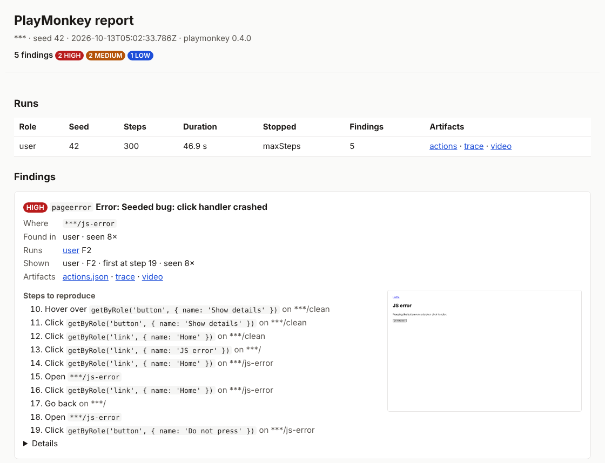

Zufalls-Monkey mit Seed
Klickt Links und Buttons, füllt Formulare mit gültigen und fiesen Werten und erkundet unbesuchte Zustände. Derselbe Seed ergibt denselben Lauf.
Ein Kommandozeilenwerkzeug, das mit Playwright einen echten Browser steuert, sich mit Seed-gesteuertem Zufall klickend, tippend und absendend durch deine Website bewegt und meldet, was kaputtgeht: nicht abgefangene Fehler, fehlschlagende Requests, kaputte Seiten. Zu jedem Befund gibt es die Schritte zum Nachstellen.
Stand: Version 0.8.0. Der Zufalls-Monkey mit Seed, mit Orakeln, Berichten, Baseline, Replay und Shrink; Claude auf Microsoft Foundry oder jeder OpenAI-kompatible Endpunkt für festgefahrene Situationen, auf Wunsch als Agent, mit geschwärzten Screenshots und als Orakel für visuelle Fehler; Cookie-Banner, native Dialoge, iframes, Popups, Uploads und Downloads werden behandelt; parallele Läufe je Rolle und Seed und ein CI-Beispiel.
$ npx monkey run fixtures/configs/fixture.json
seed: 42
[user] starting
[user] 300 steps in 46.9s, 45 states, 0 failed actions, stopped: maxSteps, 5 findings
[user] F1 medium console: Seeded bug: console error on load (step 1, 10×)
[user] F2 high pageerror: Error: Seeded bug: click handler crashed (step 19, 8×)
[user] F3 medium http4xx: GET /missing-page responded 404 Not Found (step 21, 9×)
[user] F4 low overflow: horizontal overflow on /overflow: div makes the page 1664px wide in a 1280px viewport (step 24, 9×)
[user] F5 high http5xx: POST /form responded 500 Internal Server Error (step 42, 2×)
[user] actions: fixtures/configs/monkey-report/user/actions.json
[user] trace: fixtures/configs/monkey-report/user/trace.zip
findings: 5 (2 high, 2 medium, 1 low)
report: fixtures/configs/monkey-report/report.html
exit 1: findings presentKlickt Links und Buttons, füllt Formulare mit gültigen und fiesen Werten und erkundet unbesuchte Zustände. Derselbe Seed ergibt denselben Lauf.
Cookie-Banner, Dialoge, Formulare, die gültige Daten brauchen, oder eine Anmeldeschranke: Ein Modell übernimmt für ein paar Schritte, dann macht der Monkey weiter.
Orakel achten auf nicht abgefangene Exceptions, Konsolenfehler, HTTP 4xx und 5xx, Abstürze, Hänger, Fehlerseiten, Layout-Überlauf und auf Wunsch Barrierefreiheit, ohne Duplikate. Mit einer Baseline lassen nur neue Befunde die CI scheitern.
Jede Aktion wird mit einem dauerhaften Locator protokolliert. monkey replay spielt das Protokoll ohne LLM erneut ab,
monkey shrink kürzt den Weg zu jedem Befund auf die wenigsten Aktionen; Traces und Videos zeigen, was passiert ist.

PlayMonkey klickt, löscht und sendet alles ab, was es findet. Richte es nur auf Umgebungen, die du zurücksetzen kannst.
maxSteps und maxMinutes beenden jeden Lauf.stayOnDomain (standardmäßig an) folgt es keinen Links zu anderen Origins.${VAR}-Platzhalter werden beim Start aufgelöst und in jeder Ausgabe als *** maskiert.Du brauchst Node.js 26 oder neuer und einen Playwright-Browser. Beschreibe die Website in einer JSON-Konfiguration; Secrets bleiben in Umgebungsvariablen.
{
"baseUrl": "https://test.example.org",
"auth": [
{
"name": "admin",
"loginUrl": "/login",
"fields": { "username": "${ADMIN_USER}", "password": "${ADMIN_PASS}" },
"submit": "button[type=submit]"
}
]
}npm install --save-dev github:besessener/PlayMonkey#v0.8.0 in deinem Projekt, danach
npx playwright install chromium.
npx monkey run config.json meldet sich an, erkundet jede Rolle und listet die Befunde auf, jeden mit Screenshot und den Schritten, die zu ihm geführt haben.Das Tutorial Erste Schritte führt dich gegen die mitgelieferte Fixture-Seite durch alles; die Konfigurationsreferenz listet jeden Schlüssel auf.
Geordnet nach dem, was du gerade brauchst (Diátaxis).
Vier Werkzeuge aus derselben agentischen Idee, mit denselben Grundregeln, Qualitätsprüfungen und demselben Aufbau der Dokumentation.